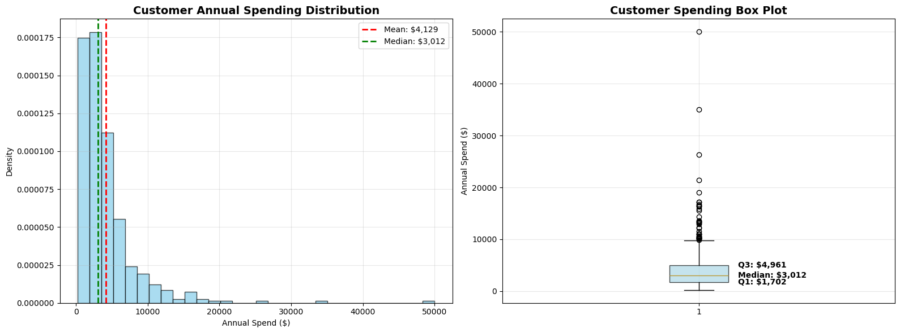
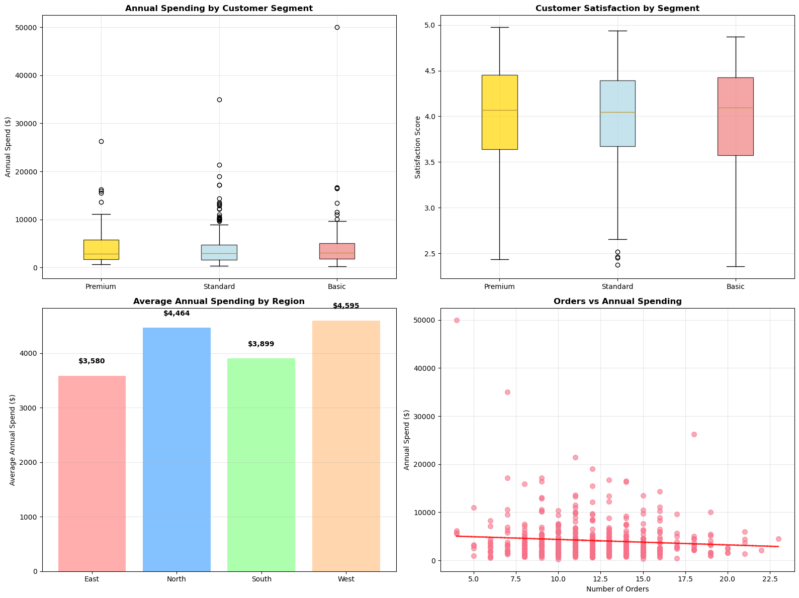
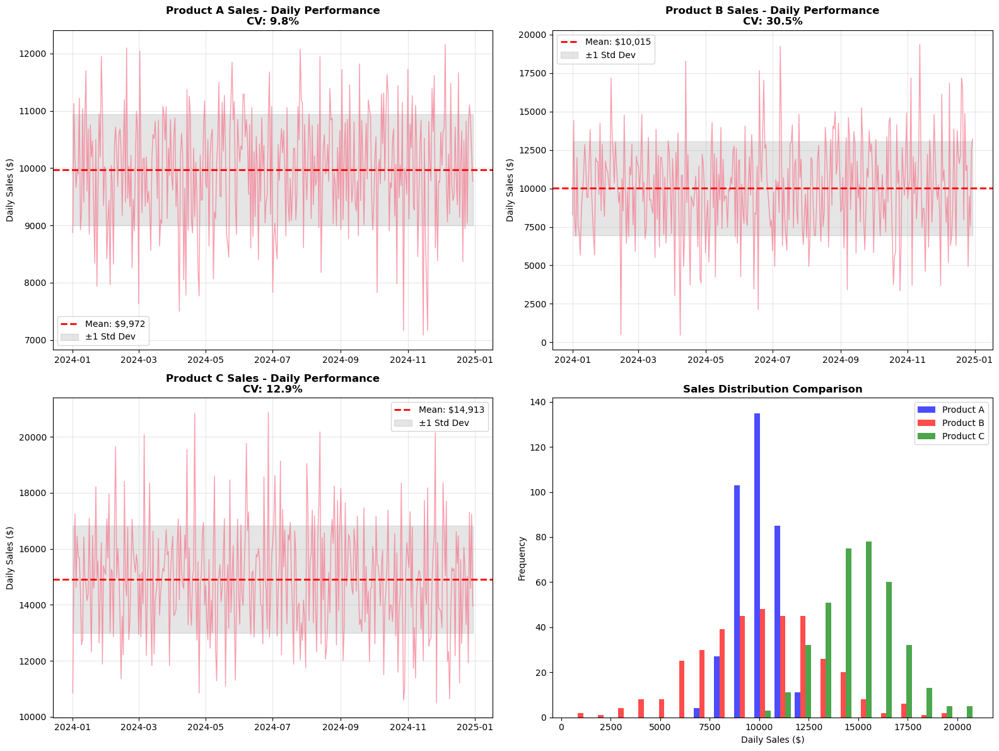

Summarize Complex Data: Turn thousands of records into key insights
Identify Patterns: Discover trends and outliers
Make Comparisons: Benchmark performance
Support Decisions: Evidence-based business choices
What We’ll Master
Descriptive measures (mean, median, mode)
Variability measures (std dev, variance)
Distribution analysis and visualization
Correlation analysis for relationships
Business applications of statistical concepts
Note
Statistics transform raw business data into actionable intelligence!
Part 1: Central Tendency Measures
Understanding Your Data’s Center
import pandas as pdimport numpy as npimport matplotlib.pyplot as pltimport seaborn as sns# Set style for consistent, professional appearanceplt.style.use('default')sns.set_palette("husl")# Customer transaction datanp.random.seed(42)customer_transactions = pd.DataFrame({'Customer_ID': [f'C{i:03d}'for i inrange(1, 501)],'Annual_Spend': np.random.lognormal(8, 0.8, 500),'Satisfaction_Score': np.random.beta(8, 2, 500) *5,'Days_Since_Last_Purchase': np.random.exponential(30, 500),'Number_of_Orders': np.random.poisson(12, 500),'Region': np.random.choice(['North', 'South', 'East', 'West'], 500),'Customer_Segment': np.random.choice(['Premium', 'Standard', 'Basic'], 500, p=[0.2, 0.5, 0.3])})# Clean data for realistic business valuescustomer_transactions['Annual_Spend'] = np.clip(customer_transactions['Annual_Spend'], 100, 50000)customer_transactions['Days_Since_Last_Purchase'] = np.clip(customer_transactions['Days_Since_Last_Purchase'], 1, 365)customer_transactions['Number_of_Orders'] = np.clip(customer_transactions['Number_of_Orders'], 1, 50)print("CENTRAL TENDENCY ANALYSIS")print("="*30)print(f"Dataset: {len(customer_transactions):,} customers")print("\nCustomer Annual Spending Analysis:")# Calculate central tendency measuresspend_data = customer_transactions['Annual_Spend']mean_spend = spend_data.mean()median_spend = spend_data.median()mode_spend = spend_data.mode()[0] iflen(spend_data.mode()) >0else"No clear mode"print(f" Mean Annual Spend: ${mean_spend:,.2f}")print(f" Median Annual Spend: ${median_spend:,.2f}")print(f" Mode Annual Spend: ${mode_spend ifisinstance(mode_spend, str) elsef'${mode_spend:,.2f}'}")# Visualize the distribution with central tendency measuresfig, (ax1, ax2) = plt.subplots(1, 2, figsize=(16, 6))# Histogram with central tendency linesax1.hist(spend_data, bins=30, alpha=0.7, color='skyblue', edgecolor='black', density=True)ax1.axvline(mean_spend, color='red', linestyle='--', linewidth=2, label=f'Mean: ${mean_spend:,.0f}')ax1.axvline(median_spend, color='green', linestyle='--', linewidth=2, label=f'Median: ${median_spend:,.0f}')ax1.set_title('Customer Annual Spending Distribution', fontsize=14, fontweight='bold')ax1.set_xlabel('Annual Spend ($)')ax1.set_ylabel('Density')ax1.legend()ax1.grid(True, alpha=0.3)# Box plot for additional insightsax2.boxplot(spend_data, vert=True, patch_artist=True, boxprops=dict(facecolor='lightblue', alpha=0.7))ax2.set_ylabel('Annual Spend ($)')ax2.set_title('Customer Spending Box Plot', fontsize=14, fontweight='bold')ax2.grid(True, alpha=0.3)# Add quartile informationq1 = spend_data.quantile(0.25)q3 = spend_data.quantile(0.75)iqr = q3 - q1ax2.text(1.1, q1, f'Q1: ${q1:,.0f}', va='center', ha='left', fontweight='bold')ax2.text(1.1, median_spend, f'Median: ${median_spend:,.0f}', va='center', ha='left', fontweight='bold')ax2.text(1.1, q3, f'Q3: ${q3:,.0f}', va='center', ha='left', fontweight='bold')plt.tight_layout()plt.show()# Business insights from central tendencyprint(f"\nBusiness Insights:")print(f" 50% of customers spend less than ${median_spend:,.2f} annually")print(f" Average customer value: ${mean_spend:,.2f}")print(f" Spending spread (IQR): ${iqr:,.2f}")# Skewness analysisfrom scipy import statsskewness = stats.skew(spend_data)print(f" Distribution skewness: {skewness:.3f}", end="")if skewness >1:print(" (Highly right-skewed - few high spenders)")elif skewness >0.5:print(" (Moderately right-skewed)")elif skewness <-1:print(" (Highly left-skewed)")elif skewness <-0.5:print(" (Moderately left-skewed)")else:print(" (Approximately symmetric)")
CENTRAL TENDENCY ANALYSIS
==============================
Dataset: 500 customers
Customer Annual Spending Analysis:
Mean Annual Spend: $4,128.55
Median Annual Spend: $3,011.63
Mode Annual Spend: $$222.96
Business Insights:
50% of customers spend less than $3,011.63 annually
Average customer value: $4,128.55
Spending spread (IQR): $3,259.02
Distribution skewness: 4.509 (Highly right-skewed - few high spenders)

Central Tendency by Business Segments
# Analyze central tendency across different business segmentsprint("SEGMENTED CENTRAL TENDENCY ANALYSIS")print("="*45)# Group analysis by customer segmentsegment_analysis = customer_transactions.groupby('Customer_Segment').agg({'Annual_Spend': ['count', 'mean', 'median', 'std'],'Satisfaction_Score': ['mean', 'median'],'Number_of_Orders': ['mean', 'median']}).round(2)# Flatten column namessegment_analysis.columns = ['Customer_Count', 'Mean_Spend', 'Median_Spend', 'Std_Spend', 'Mean_Satisfaction', 'Median_Satisfaction', 'Mean_Orders', 'Median_Orders']print("Customer Segment Analysis:")print(segment_analysis)# Regional analysisprint(f"\nRegional Central Tendency Analysis:")regional_stats = customer_transactions.groupby('Region')['Annual_Spend'].agg(['mean', 'median', 'std']).round(2)regional_stats.columns = ['Mean_Spend', 'Median_Spend', 'Std_Deviation']print(regional_stats)# Visualize segment differencesfig, axes = plt.subplots(2, 2, figsize=(16, 12))# Box plots by segmentsegments = ['Premium', 'Standard', 'Basic']spend_by_segment = [customer_transactions[customer_transactions['Customer_Segment'] == seg]['Annual_Spend'] for seg in segments]box_plot = axes[0, 0].boxplot(spend_by_segment, labels=segments, patch_artist=True)colors = ['gold', 'lightblue', 'lightcoral']for patch, color inzip(box_plot['boxes'], colors): patch.set_facecolor(color) patch.set_alpha(0.7)axes[0, 0].set_title('Annual Spending by Customer Segment', fontweight='bold')axes[0, 0].set_ylabel('Annual Spend ($)')axes[0, 0].grid(True, alpha=0.3)# Satisfaction scores by segmentsatisfaction_by_segment = [customer_transactions[customer_transactions['Customer_Segment'] == seg]['Satisfaction_Score'] for seg in segments]box_plot2 = axes[0, 1].boxplot(satisfaction_by_segment, labels=segments, patch_artist=True)for patch, color inzip(box_plot2['boxes'], colors): patch.set_facecolor(color) patch.set_alpha(0.7)axes[0, 1].set_title('Customer Satisfaction by Segment', fontweight='bold')axes[0, 1].set_ylabel('Satisfaction Score')axes[0, 1].grid(True, alpha=0.3)# Regional comparison - bar chartregional_means = customer_transactions.groupby('Region')['Annual_Spend'].mean()bars = axes[1, 0].bar(regional_means.index, regional_means.values, color=['#ff9999', '#66b3ff', '#99ff99', '#ffcc99'], alpha=0.8)# Add value labels on barsfor bar, value inzip(bars, regional_means.values): axes[1, 0].text(bar.get_x() + bar.get_width()/2, bar.get_height() +200,f'${value:,.0f}', ha='center', va='bottom', fontweight='bold')axes[1, 0].set_title('Average Annual Spending by Region', fontweight='bold')axes[1, 0].set_ylabel('Average Annual Spend ($)')axes[1, 0].grid(axis='y', alpha=0.3)# Orders vs Spending relationshipaxes[1, 1].scatter(customer_transactions['Number_of_Orders'], customer_transactions['Annual_Spend'], alpha=0.6, s=50)axes[1, 1].set_xlabel('Number of Orders')axes[1, 1].set_ylabel('Annual Spend ($)')axes[1, 1].set_title('Orders vs Annual Spending', fontweight='bold')axes[1, 1].grid(True, alpha=0.3)# Add trendlinez = np.polyfit(customer_transactions['Number_of_Orders'], customer_transactions['Annual_Spend'], 1)p = np.poly1d(z)axes[1, 1].plot(customer_transactions['Number_of_Orders'], p(customer_transactions['Number_of_Orders']), "r--", alpha=0.8, linewidth=2)plt.tight_layout()plt.show()# Business insights from segmentationprint(f"\nSegmentation Insights:")best_segment = segment_analysis['Mean_Spend'].idxmax()worst_segment = segment_analysis['Mean_Spend'].idxmin()print(f" Highest value segment: {best_segment} (${segment_analysis.loc[best_segment, 'Mean_Spend']:,.2f} avg)")print(f" Lowest value segment: {worst_segment} (${segment_analysis.loc[worst_segment, 'Mean_Spend']:,.2f} avg)")# Regional insightsbest_region = regional_stats['Mean_Spend'].idxmax()print(f" Top performing region: {best_region} (${regional_stats.loc[best_region, 'Mean_Spend']:,.2f} avg)")# Calculate the business impacttotal_revenue = customer_transactions['Annual_Spend'].sum()premium_revenue = customer_transactions[customer_transactions['Customer_Segment'] =='Premium']['Annual_Spend'].sum()premium_percentage = (premium_revenue / total_revenue) *100print(f" Premium customers contribute {premium_percentage:.1f}% of total revenue")
SEGMENTED CENTRAL TENDENCY ANALYSIS
=============================================
Customer Segment Analysis:
Customer_Count Mean_Spend Median_Spend Std_Spend \
Customer_Segment
Basic 144 4170.53 3111.62 4916.89
Premium 95 4390.95 2896.73 4126.72
Standard 261 4009.88 3012.13 3842.76
Mean_Satisfaction Median_Satisfaction Mean_Orders \
Customer_Segment
Basic 3.98 4.10 11.67
Premium 4.01 4.07 11.98
Standard 4.00 4.05 12.06
Median_Orders
Customer_Segment
Basic 11.0
Premium 12.0
Standard 12.0
Regional Central Tendency Analysis:
Mean_Spend Median_Spend Std_Deviation
Region
East 3580.11 3152.16 2846.46
North 4463.81 2818.91 4681.87
South 3899.24 3133.19 3137.87
West 4594.81 3031.47 5739.81
Segmentation Insights:
Highest value segment: Premium ($4,390.95 avg)
Lowest value segment: Standard ($4,009.88 avg)
Top performing region: West ($4,594.81 avg)
Premium customers contribute 20.2% of total revenue

Part 2: Measures of Variability
Understanding Data Spread
# Analyze variability in business metricsprint("VARIABILITY ANALYSIS")print("="*25)# Product performance data with different variability patternsproducts_data = pd.DataFrame({'Product_A_Sales': np.random.normal(10000, 1000, 365), # Low variability'Product_B_Sales': np.random.normal(10000, 3000, 365), # High variability 'Product_C_Sales': np.random.normal(15000, 2000, 365), # Medium variability, higher mean'Date': pd.date_range('2024-01-01', periods=365)})# Ensure no negative salesfor col in ['Product_A_Sales', 'Product_B_Sales', 'Product_C_Sales']: products_data[col] = np.abs(products_data[col])print("Product Sales Variability Analysis:")print("="*40)# Calculate variability measuresvariability_stats = pd.DataFrame()for product in ['Product_A_Sales', 'Product_B_Sales', 'Product_C_Sales']: data = products_data[product] stats_dict = {'Mean': data.mean(),'Std_Dev': data.std(),'Variance': data.var(),'Range': data.max() - data.min(),'IQR': data.quantile(0.75) - data.quantile(0.25),'CV_Percent': (data.std() / data.mean()) *100# Coefficient of Variation } variability_stats[product] = stats_dictvariability_stats = variability_stats.round(2)print(variability_stats)# Visualize the different variability patternsfig, axes = plt.subplots(2, 2, figsize=(16, 12))# Time series showing different variabilityfor i, product inenumerate(['Product_A_Sales', 'Product_B_Sales', 'Product_C_Sales']):if i <3: ax = axes[0, i] if i <2else axes[1, 0] ax.plot(products_data['Date'], products_data[product], alpha=0.7, linewidth=1)# Add mean line mean_val = products_data[product].mean() ax.axhline(y=mean_val, color='red', linestyle='--', linewidth=2, label=f'Mean: ${mean_val:,.0f}')# Add standard deviation bands std_val = products_data[product].std() ax.fill_between(products_data['Date'], mean_val - std_val, mean_val + std_val, alpha=0.2, color='gray', label='±1 Std Dev') ax.set_title(f'{product.replace("_", " ")} - Daily Performance\nCV: {variability_stats.loc["CV_Percent", product]:.1f}%', fontweight='bold') ax.set_ylabel('Daily Sales ($)') ax.legend() ax.grid(True, alpha=0.3)# Comparative histogramax = axes[1, 1]ax.hist([products_data['Product_A_Sales'], products_data['Product_B_Sales'], products_data['Product_C_Sales']], bins=20, alpha=0.7, color=['blue', 'red', 'green'], label=['Product A', 'Product B', 'Product C'])ax.set_title('Sales Distribution Comparison', fontweight='bold')ax.set_xlabel('Daily Sales ($)')ax.set_ylabel('Frequency')ax.legend()plt.tight_layout()plt.show()# Business risk assessment based on variabilityprint(f"\nBusiness Risk Assessment:")print(f" Most Consistent (Lowest Risk): Product A (CV: {variability_stats.loc['CV_Percent', 'Product_A_Sales']:.1f}%)")print(f" Most Variable (Highest Risk): Product B (CV: {variability_stats.loc['CV_Percent', 'Product_B_Sales']:.1f}%)")print(f" Highest Average Revenue: Product C (${variability_stats.loc['Mean', 'Product_C_Sales']:,.0f})")# Calculate Value at Risk (VaR) - 5th percentilevar_analysis = pd.DataFrame()for product in ['Product_A_Sales', 'Product_B_Sales', 'Product_C_Sales']: data = products_data[product] var_analysis[product] = {'VaR_5th_Percentile': data.quantile(0.05),'Expected_Daily': data.mean(),'Worst_Case_Loss': data.mean() - data.quantile(0.05) }var_analysis = var_analysis.round(0)print(f"\nValue at Risk Analysis (5th Percentile):")print(var_analysis)
Business Risk Assessment:
Most Consistent (Lowest Risk): Product A (CV: 9.8%)
Most Variable (Highest Risk): Product B (CV: 30.5%)
Highest Average Revenue: Product C ($14,913)
Value at Risk Analysis (5th Percentile):
Product_A_Sales Product_B_Sales Product_C_Sales
VaR_5th_Percentile 8329.0 4937.0 11884.0
Expected_Daily 9972.0 10015.0 14913.0
Worst_Case_Loss 1643.0 5078.0 3029.0

Part 3: Distribution Analysis
Understanding Data Shapes and Patterns
# Employee salary analysis across departmentsprint("DISTRIBUTION ANALYSIS - EMPLOYEE SALARIES")print("="*45)# Generate realistic salary data for different departmentsdepartments = ['Sales', 'Engineering', 'Marketing', 'HR', 'Finance']salary_data = {}# Different salary distributions by departmentnp.random.seed(42)salary_data['Sales'] = np.random.lognormal(10.8, 0.3, 200) # Right-skewedsalary_data['Engineering'] = np.random.normal(95000, 15000, 150) # Normalsalary_data['Marketing'] = np.random.beta(2, 8, 100) *80000+40000# Left-skewedsalary_data['HR'] = np.random.gamma(2, 25000, 80) # Right-skewedsalary_data['Finance'] = np.random.normal(85000, 12000, 120) # Normal# Clean and realistic salary rangesfor dept in departments: salary_data[dept] = np.clip(salary_data[dept], 35000, 200000)# Create DataFrame for analysisall_salaries = []dept_labels = []for dept, salaries in salary_data.items(): all_salaries.extend(salaries) dept_labels.extend([dept] *len(salaries))salary_df = pd.DataFrame({'Department': dept_labels,'Salary': all_salaries})# Calculate distribution statisticsdist_stats = pd.DataFrame()for dept in departments: dept_salaries = salary_data[dept] dist_stats[dept] = {'Mean': np.mean(dept_salaries),'Median': np.median(dept_salaries),'Std_Dev': np.std(dept_salaries),'Skewness': stats.skew(dept_salaries),'Kurtosis': stats.kurtosis(dept_salaries),'Min': np.min(dept_salaries),'Max': np.max(dept_salaries) }dist_stats = dist_stats.round(2)print("Distribution Statistics by Department:")print(dist_stats)# Comprehensive visualization of distributionsfig, axes = plt.subplots(3, 2, figsize=(16, 14))# 1. Histograms with KDEcolors = ['blue', 'red', 'green', 'orange', 'purple']for i, (dept, color) inenumerate(zip(departments, colors)): row, col = i //2, i %2if row <3: ax = axes[row, col]# Histogram with KDE overlay ax.hist(salary_data[dept], bins=20, alpha=0.7, color=color, density=True, edgecolor='black')# Add KDE linefrom scipy.stats import gaussian_kde kde = gaussian_kde(salary_data[dept]) x_range = np.linspace(salary_data[dept].min(), salary_data[dept].max(), 100) ax.plot(x_range, kde(x_range), color='black', linewidth=2, label='KDE')# Add mean and median lines mean_val = np.mean(salary_data[dept]) median_val = np.median(salary_data[dept]) ax.axvline(mean_val, color='red', linestyle='--', linewidth=2, label=f'Mean: ${mean_val:,.0f}') ax.axvline(median_val, color='green', linestyle='--', linewidth=2, label=f'Median: ${median_val:,.0f}') ax.set_title(f'{dept} Salary Distribution\nSkewness: {dist_stats.loc["Skewness", dept]:.2f}', fontweight='bold') ax.set_xlabel('Annual Salary ($)') ax.set_ylabel('Density') ax.legend() ax.grid(True, alpha=0.3)# Box plot comparison (using the empty subplot)axes[2, 1].boxplot([salary_data[dept] for dept in departments], labels=departments, patch_artist=True)axes[2, 1].set_title('Salary Distribution Comparison (Box Plots)', fontweight='bold')axes[2, 1].set_ylabel('Annual Salary ($)')axes[2, 1].tick_params(axis='x', rotation=45)axes[2, 1].grid(True, alpha=0.3)# Color the boxesbox_colors = ['lightblue', 'lightcoral', 'lightgreen', 'lightyellow', 'lightpink']for patch, color inzip(axes[2, 1].artists, box_colors): patch.set_facecolor(color) patch.set_alpha(0.7)plt.tight_layout()plt.show()# Business insights from distribution analysisprint(f"\nDistribution Analysis Insights:")# Identify distribution characteristicsfor dept in departments: skew = dist_stats.loc['Skewness', dept] mean_sal = dist_stats.loc['Mean', dept] median_sal = dist_stats.loc['Median', dept]ifabs(skew) <0.5: shape ="approximately normal"elif skew >1: shape ="highly right-skewed (few high earners)"elif skew >0.5: shape ="moderately right-skewed"elif skew <-1: shape ="highly left-skewed"else: shape ="moderately left-skewed"print(f" {dept}: Mean ${mean_sal:,.0f}, Median ${median_sal:,.0f} - {shape}")# Pay equity analysisprint(f"\nPay Equity Analysis:")overall_mean = salary_df['Salary'].mean()for dept in departments: dept_mean = dist_stats.loc['Mean', dept] deviation = ((dept_mean - overall_mean) / overall_mean) *100print(f" {dept}: {deviation:+.1f}% vs company average")# Identify departments needing attentionhigh_inequality = []for dept in departments: cv = (dist_stats.loc['Std_Dev', dept] / dist_stats.loc['Mean', dept]) *100if cv >20: # Coefficient of variation > 20% high_inequality.append(dept)if high_inequality:print(f"\nDepartments with High Salary Inequality: {', '.join(high_inequality)}")else:print(f"\nAll departments show reasonable salary equality")
DISTRIBUTION ANALYSIS - EMPLOYEE SALARIES
=============================================
Distribution Statistics by Department:
Sales Engineering Marketing HR Finance
Mean 50853.80 95809.87 56143.71 53867.36 85351.23
Median 48959.38 96092.05 54611.77 46990.70 87036.02
Std_Dev 13939.07 14786.61 9901.04 23244.85 10962.89
Skewness 1.25 0.20 0.76 1.35 -0.59
Kurtosis 2.07 1.16 0.11 1.12 0.81
Min 35000.00 46380.99 41638.85 35000.00 43230.29
Max 110863.03 152790.97 83436.70 128932.68 113288.52
Distribution Analysis Insights:
Sales: Mean $50,854, Median $48,959 - highly right-skewed (few high earners)
Engineering: Mean $95,810, Median $96,092 - approximately normal
Marketing: Mean $56,144, Median $54,612 - moderately right-skewed
HR: Mean $53,867, Median $46,991 - highly right-skewed (few high earners)
Finance: Mean $85,351, Median $87,036 - moderately left-skewed
Pay Equity Analysis:
Sales: -26.1% vs company average
Engineering: +39.3% vs company average
Marketing: -18.4% vs company average
HR: -21.7% vs company average
Finance: +24.1% vs company average
Departments with High Salary Inequality: Sales, HR